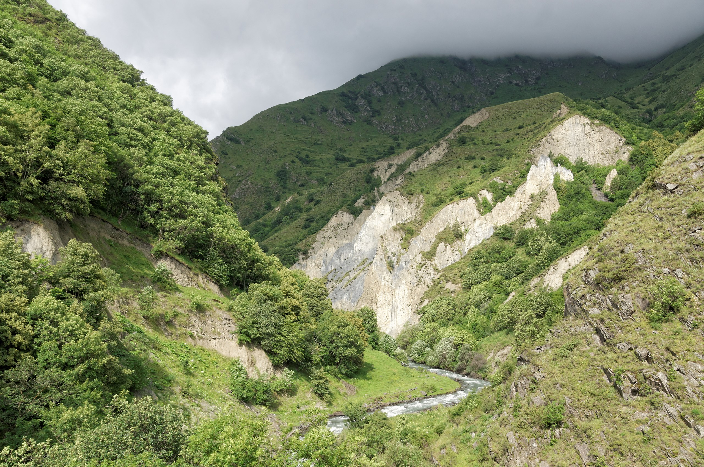
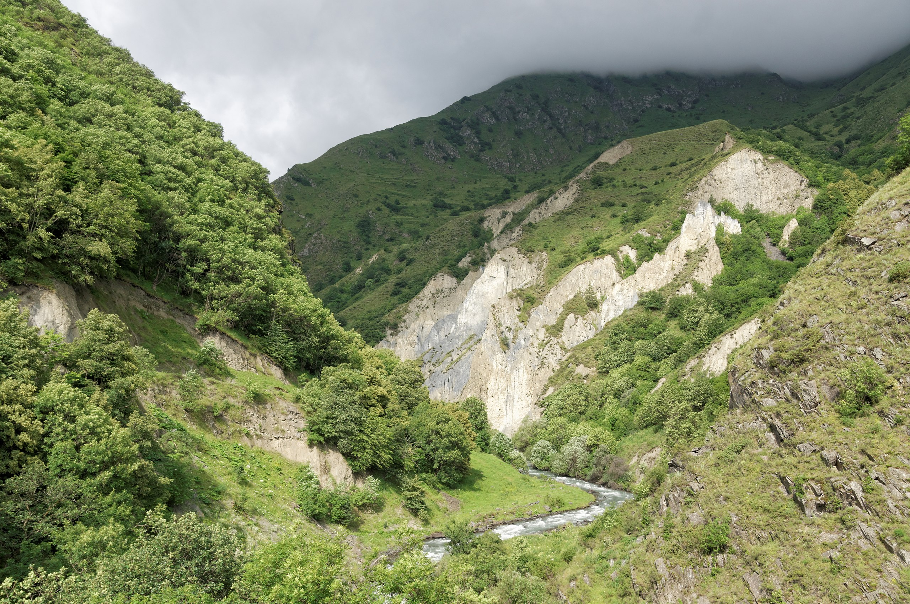

geology
Кавказ — складчатые горы с некоторой вулканической активностью, которые сформировались (как и Гималаи) в эпоху
Альпийской складчатости (примерно 28-23 миллионов лет назад). Горы состоят среди прочего из гранита и гнейса, предгорья
содержат месторождения нефти и природного газа.
С геофизической точки зрения, Кавказ образует широкую зону деформации, которая является частью пояса столкновения
континентальных плит от Альп до Гималаев. Архитектоника области сформирована перемещением Аравийской плиты на север на
Евразийскую плиту. Прижатая Африканской плитой, она двигается каждый год примерно на несколько сантиметров. Поэтому в
конце XX века на Кавказе происходили большие землетрясения с интенсивностью от 6,5 до 7 баллов по шкале Рихтера, имевшие
катастрофические последствия для населения и экономики в регионе. Более 25 тысяч человек погибли в Спитаке в Армении 7
декабря 1988 года, примерно 20 тысяч были ранены и примерно 515 тысяч остались без крова.
Большой Кавказ — грандиозная складчатая горная область. В ядре его залегают докембрийские, палеозойские и триасовые
породы, которые последовательно окружены юрскими, меловыми, палеогеновыми и неогеновыми отложениями. В средней
(высокогорной) части Кавказа древние породы выходят на поверхность.
population
На Кавказе живут более 50 народов (например: абхазы, аварцы, агульцы, адыги (черкесы), азербайджанцы, армяне, балкарцы,
горские евреи, понтийские греки, грузины, даргинцы, ингуши, кумыки, лакцы, лезгины, карачаевцы, осетины, рутульцы,
табасараны, цахуры, чеченцы и др.), которые обозначаются как кавказские народы. Они говорят на кавказских,
индоевропейских, а также алтайских языках. Этнографически и лингвистически кавказский регион можно отнести к самым
интересным областям мира. При этом заселённые районы иногда не разделены чётко друг от друга, между разными этническими
группами.
Бо́льшая часть народов Северного Кавказа являются мусульманами. Христианство доминирует в Закавказье — грузины,
армяне, и большая часть абхазцев и осетин, а также русские и украинцы являются православными христианами или
приверженцами Армянской апостольской церкви. Армянская Церковь и Грузинская Церковь являются одними из древнейших
христианских церквей в мире и играют важную роль в сохранении национальной самобытности этих народов, которые на
протяжении последних столетий были под иностранным правлением (византийцы, турки, персы, римляне, русские).
climate
Климат на Кавказе различается как по вертикали (по высоте), так и по горизонтали (по широте и местоположению).
Температура обычно уменьшается по мере увеличения высоты и приближения к морю. Средняя годовая температура в Сухуме
(Абхазия) на уровне моря составляет 15 градусов по Цельсию, а на склонах горы Казбек, на высоте 3700 м, средняя годовая
температура воздуха опускается до −6,1 градуса по Цельсию. На северном склоне Большого Кавказского хребта на 3 градуса
по Цельсию холоднее, чем на южных склонах. В высокогорных районах Малого Кавказа в Армении, Азербайджане и Грузии
отмечен резкий контраст температур между летом и зимой в связи с более континентальным климатом.
Количество осадков возрастает с востока на запад в большинстве районов. Высота над уровнем моря также играет важную
роль: в горах обычно выпадает больше осадков, чем в низинных районах. Северо-восточные регионы (Дагестан) и южная часть
Малого Кавказа являются сухими. Абсолютный минимум ежегодных осадков составляет 250 мм, в северо-восточной части
Прикаспийской низменности. Западная часть Кавказа характеризуется высоким количеством осадков. На южном склоне Большого
Кавказского хребта больше осадков, чем на северных склонах. Годовое количество осадков в западной части Кавказа
колеблется от 1000 до 4000 мм, тогда как в Восточном и Северном Кавказе (Чечня, Ингушетия, Кабардино-Балкария, Осетия,
Кахети, Картли, и т. д.) количество осадков колеблется от 600 до 1800 мм. Абсолютный максимум ежегодных осадков — 4100
мм в районе Месхетии и Аджарии. Уровень осадков на Малом Кавказе (юг Грузии, Армении, запад Азербайджана), не включая
Месхетию, варьируется от 300 до 800 мм в год.
Кавказ известен большим количеством снегопадов, хотя склоны с наветренной стороны получают гораздо меньше снега. Это
особенно заметно на Малом Кавказе, который в некоторой степени изолирован от влияния влажности, поступающей с Чёрного
моря, и получает значительно меньше осадков (в том числе в виде снега), чем в горах Большого Кавказа. В среднем зимой
снежный покров в горах Малого Кавказа колеблется от 10 до 30 см. В горах Большого Кавказа (в частности, на юго-западном
склоне) отмечены сильные снегопады. Лавины являются частым явлением с ноября по апрель.
Снежный покров в некоторых регионах (Сванетии, в северной части Абхазии) может достигать 5 метров. Район Ачишхо является
самым снежным местом на Кавказе, снежный покров которого достигает глубины 7 метров.
 

{kind=link}
{kind=link}
{kind=link}
{kind=link}
{kind=link}